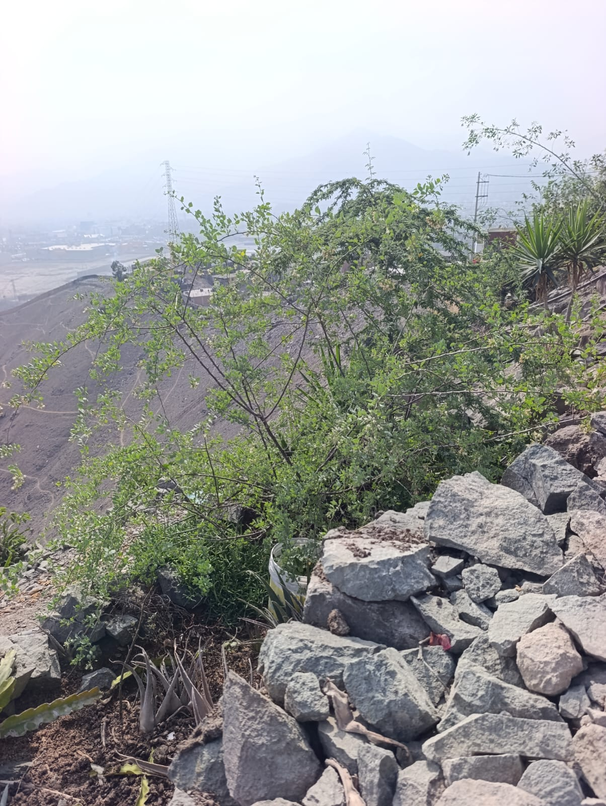
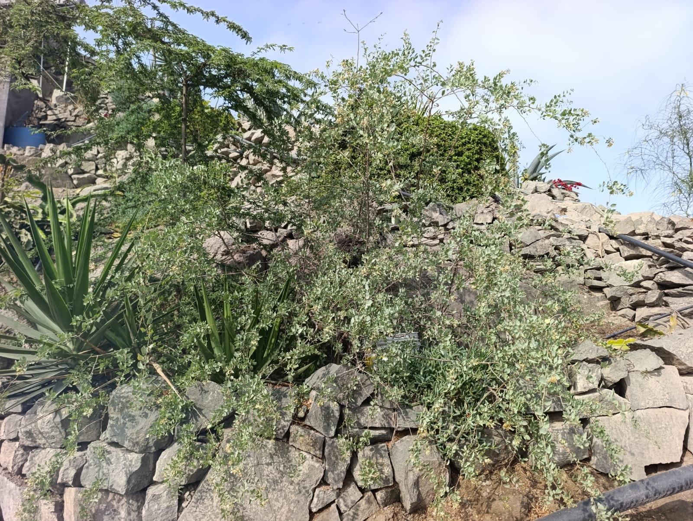
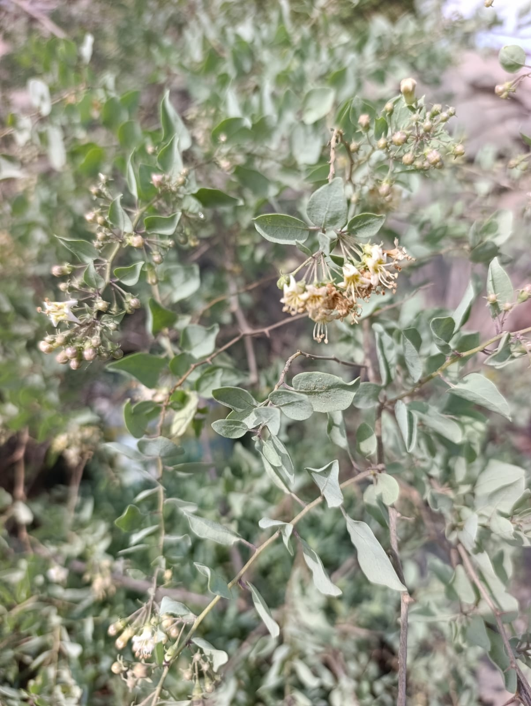
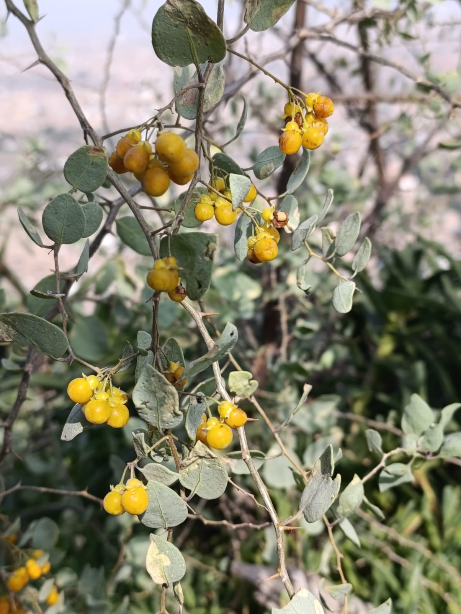

Palo Negro




Árbol nativo / Especie clave
Especie forestal emblemática presente en Cerro La Milla. Destaca por su resistencia a condiciones áridas y su capacidad de brindar sombra y refugio a la microfauna local.